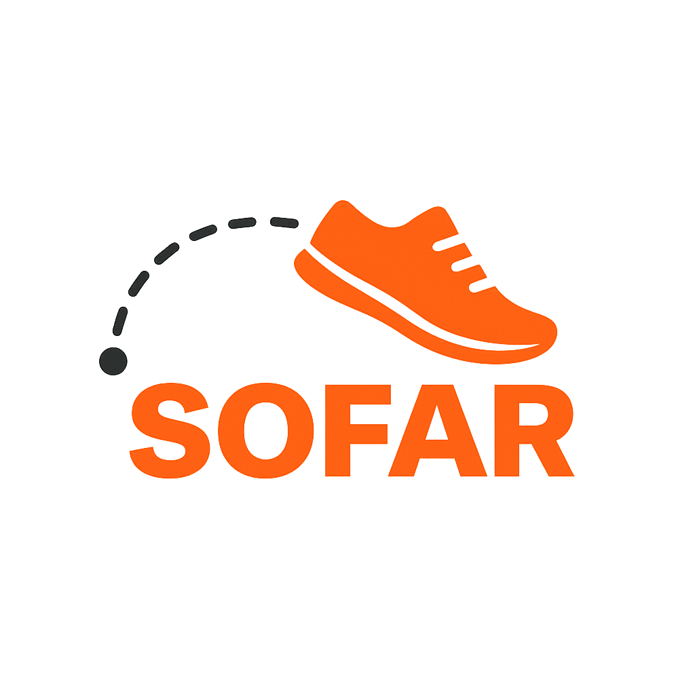

How far have you run?
Mode:
City + Direction + Distance
City + Destination + Distance
North
Northeast
East
Southeast
South
Southwest
West
Northwest
Show Distance
No route found. It is likely that the calculated destination lies in the sea or in an unreachable area. Try a different direction or shorter distance.